While rooted in a specific context, the dynamics of Round Table echo broadly across Asian diaspora. Rather than using AI for polish or realism, the film embraces the medium's instability by leaning into errors, inconsistencies, and artifacts that emerge in the generative process. Through a labor-intensive, manual stop-motion post-production workflow, these glitches become a visual language of Asian familial rupture and refusal. Round Table subverts expectations of AI perfection and reframes its so-called failures into a space of cultural memory, where marginalized identities and erased narratives reassert themselves.
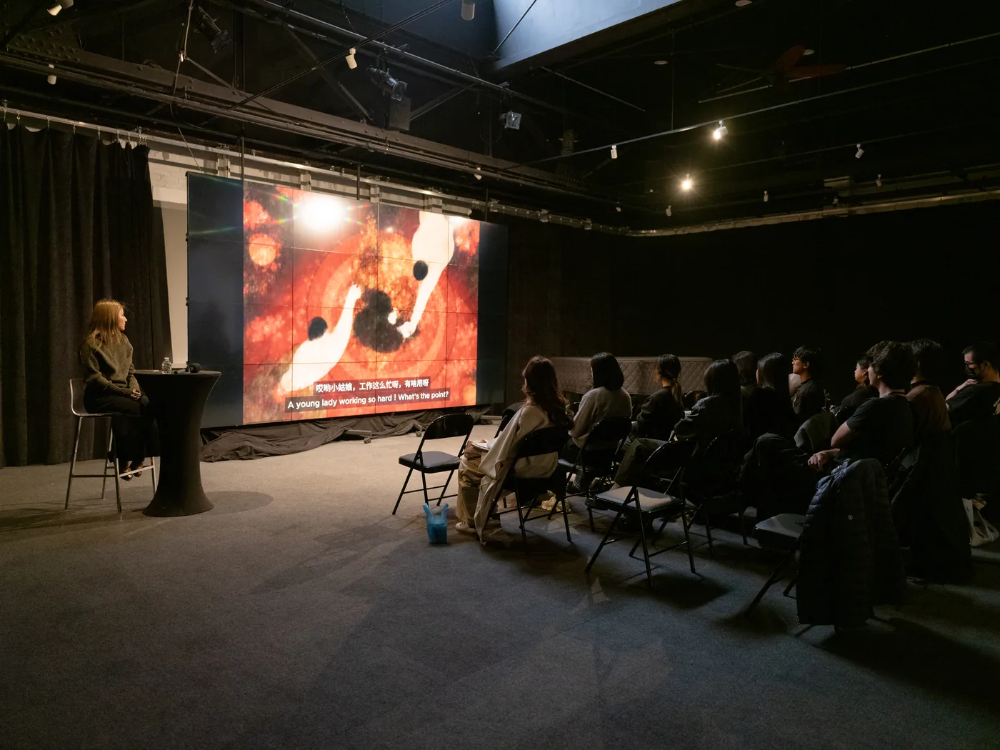
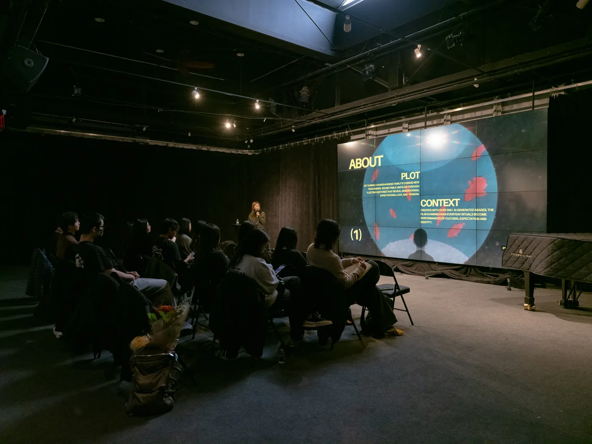
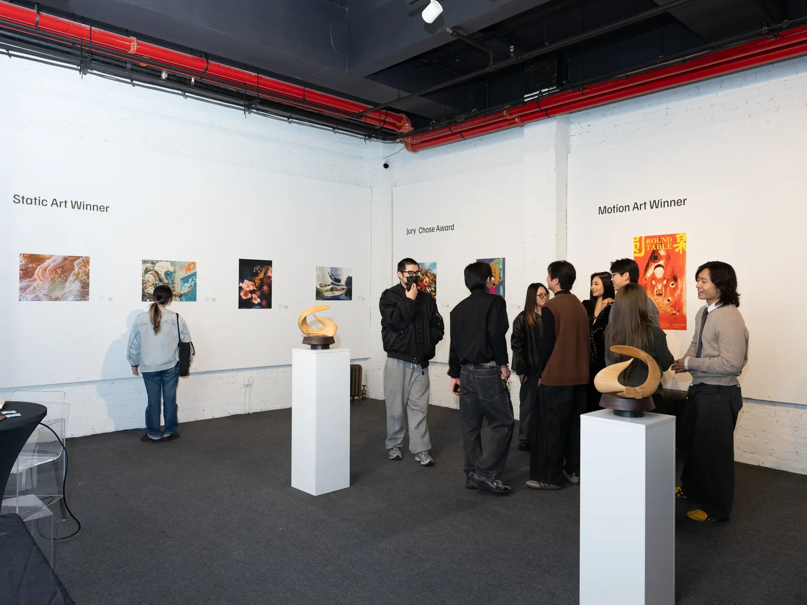
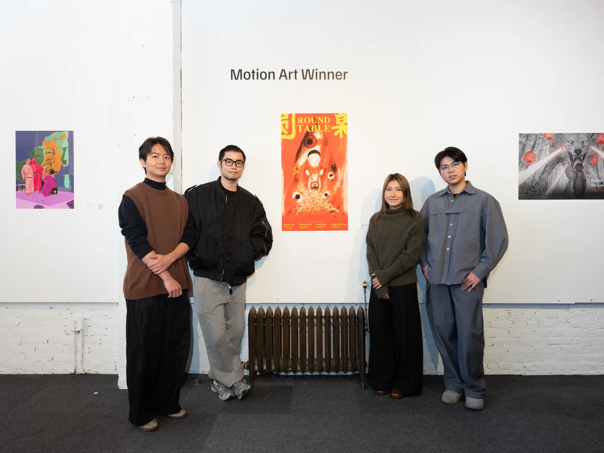
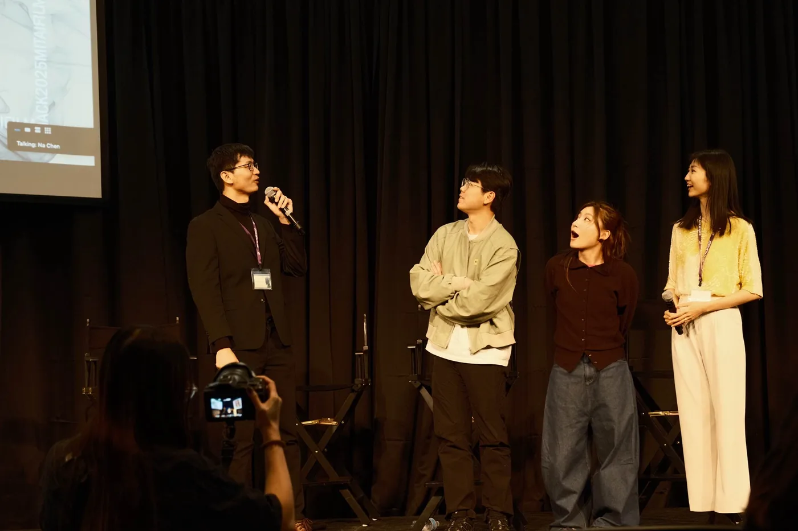
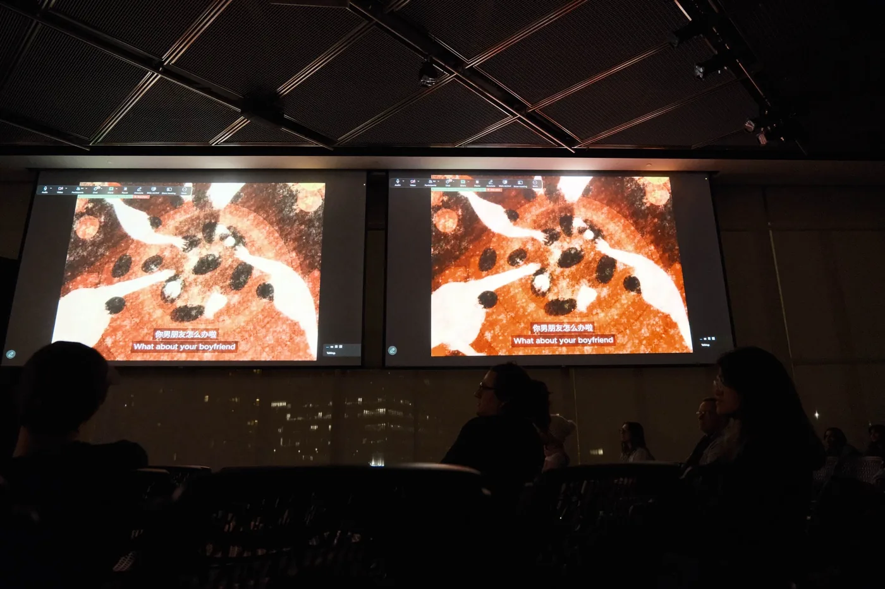
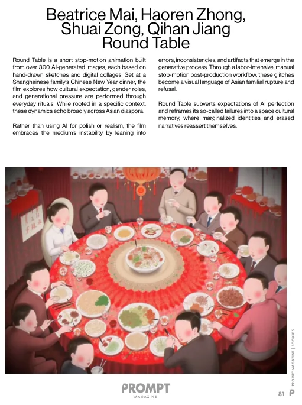
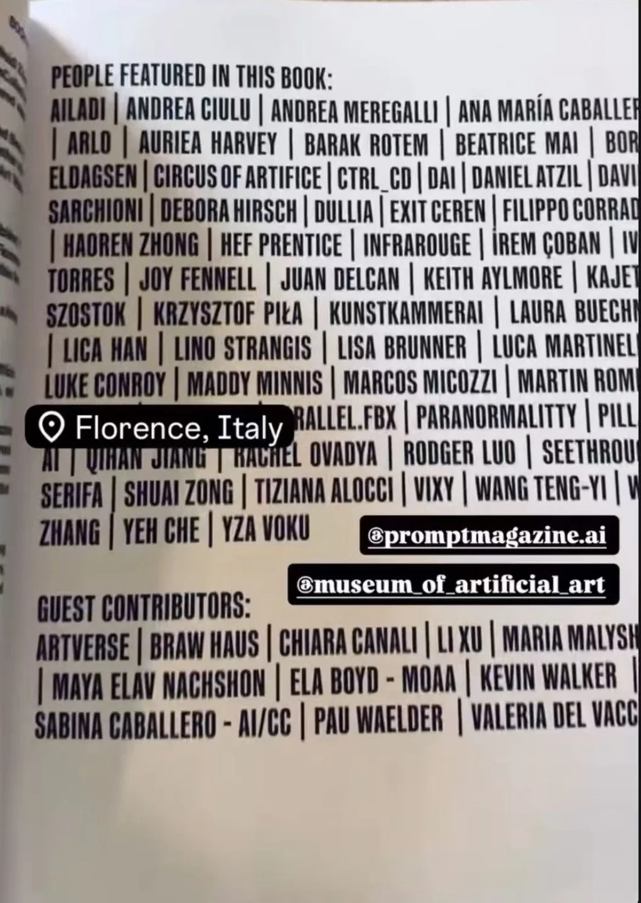
Process
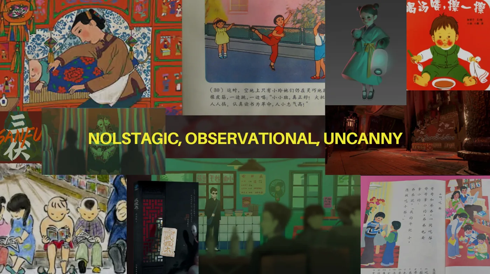
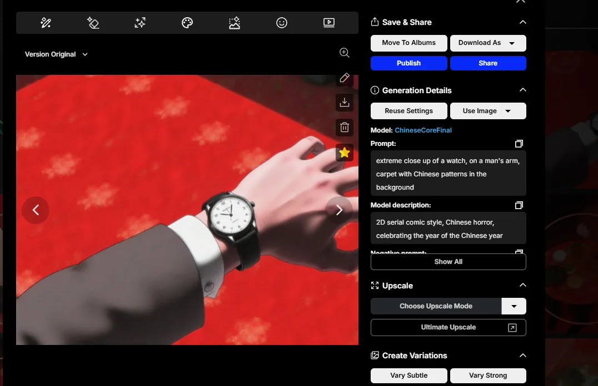
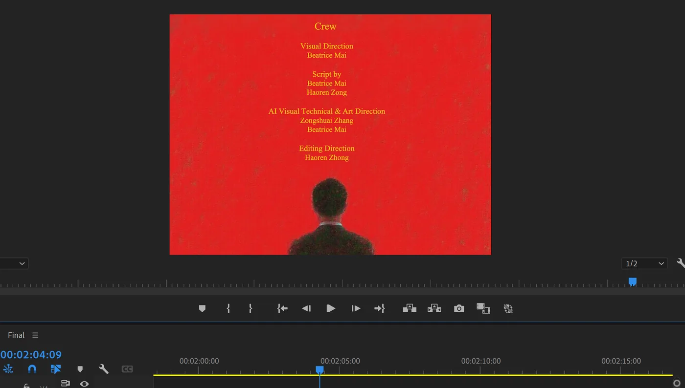